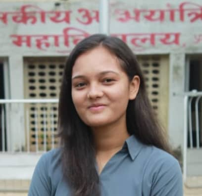

Aishwarya Mundada

Summary
Sant Gadge Baba University Graduate with BTECH in Electronics and
Telecommunication Engineering.
IT Technical Support - Fresher with less than 1 year experience is seeking
a full time position in a reputable organization.
An Effective Communicator with strong analytical and problem solving
abilities.
Education
College Name –
Government College Of Engineering Amravati.
2019-2023
Course: Electronics and Telecommunication , Overall 7.39 CGPA
School Name –
Bal Vidya Mandir , Parbhani.
2018-2019
Course : HSC , Percentage 67.9
Skills
- C++ Programming
- Data Structures and Algorithams
- HTML5
- CSS3
- Javascript
- Basics of React Js
- Postgre SQL
Other
College Projects
My Hobbies